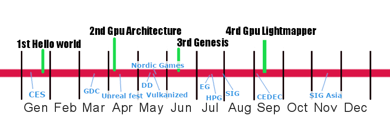
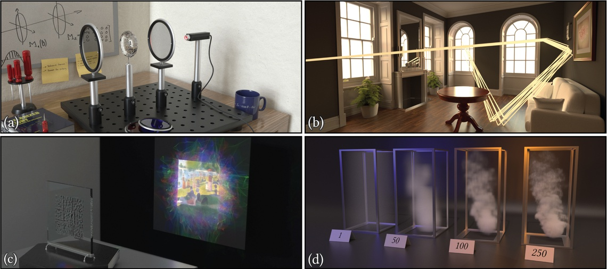
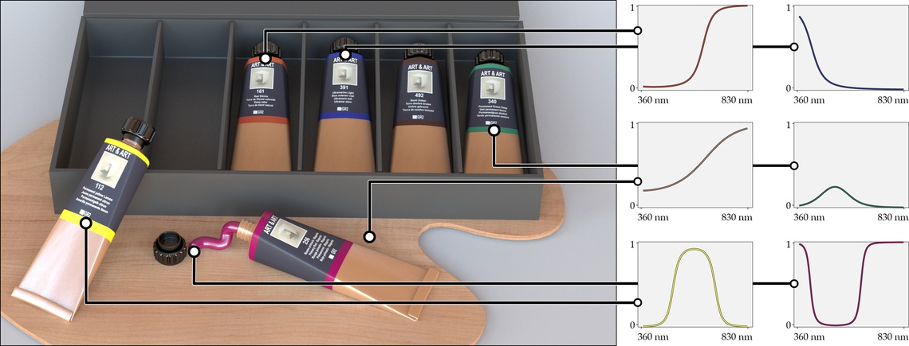
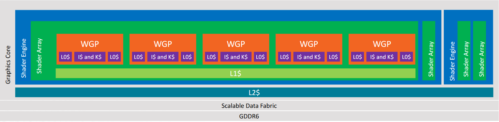

Me!Rosario Leonardi |
|
|
Researcher at Sony-Interactive-Entertainment. Ideas are my own. |
|
LondonGPU is you!

Advances in Real-Time Rendering
Hosted by
Natalya Tatarchuk @mirror2mask
Natalya Tatarchuk @mirror2mask
A Journey Through Implementing Multiscattering BRDFs and Area Lights
By Steve McAuley @stevemcauley
Leveraging Real-Time Ray Tracing to build a Hybrid Game Engine
By Evgenii Golubev @zalbard
Strand-based Hair Rendering in Frostbite
By Sebastian Tafur
No slides. Blog post: Frostbite Hair Rendering and Simulation Part 2
Mesh Shading: Towards Greater Efficiency of Geometry Processing
By Yury Uralsky
Interactive Wind and Vegetation in 'God of War'
By Sean Feeley @TheRealBigFeel
Multi-resolution Ocean Rendering in Crest Ocean System
By Huw Bowles @hdb1
No slides :(
Creating the Atmospheric World of Red Dead Redemption 2
By Fabian Bauer
Open problem in RT
Open problem in (RayTracing | RealTime) rendering.
Path Tracing for (Future) Games
How far we are from full path traced games?
Matt Pharr
Scaling Light complexity in games
Brian Karis @BrianKaris
Scaling Light complexity in Film Rendering

Patric Kelly @_pmkelly
The path to performance
Chris Wyman @_cwyman_
Path tracing in production
Organized by Johannes Hanika (Weta)
My favorite Samples
Organized by Alex Keller (nVidia)
More raytracing!!
Thanks to Eric Haines @pointinpolygon for collecting all the links
More Siggraph!!
Thanks to Stephen Hill @selfshadow for collecting all the links
More raytracing from Siggraph Asia 2019
Variance-Aware Multiple Importance Sampling
By Pascal Grittmann, Iliyan Georgiev, Philipp Slusallek, and Jaroslav Křivánek
MIS Compensation
By Ondřej Karlík, Martin Šik, Petr Vévoda, Tomáš Skřivan, and Jaroslav Křivánek
More link about Multiple Importance Sampling
Google drive folder by Max Tarpini @max_tarpini.
Mitsuba 2

Github page (not yet public)
What about HPG and EuroGraphics?
Spectral Primary Decomposition for Rendering with sRGB Reflectance
By Ian Mallett @ian_mallett, Cem Yuksel @cem_yuksel
A Low-Dimensional Function Space for Efficient Spectral Upsampling

By Wenzel Jakob Johannes Hanika
HPG program
rDNA architecture details

Dx12 Memory allocator by AMD
I can't find a good image for an allocator.
Misunderstanding Multiscattering
nVidia openGPU?
nVidia published some (minor) HW details on GitHub
CEDEC 2019
Silicon Studio lens flare (in JP)
Acceleration Data Structure for Ray Tracing (EN, notes in JP)
“Back Stage” Ray Tracing Tech Demo
Thanks to SIE.
Is not that we are hiring or anything.